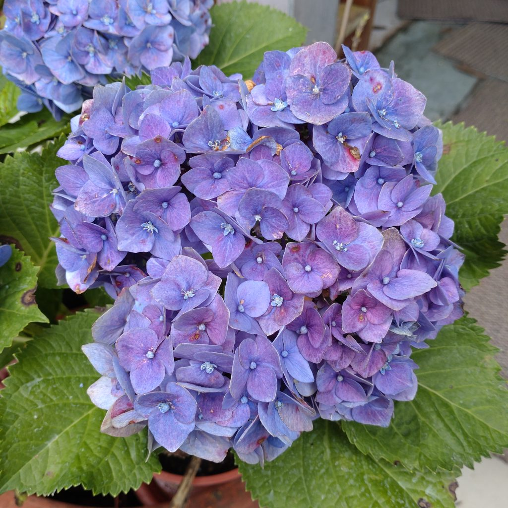
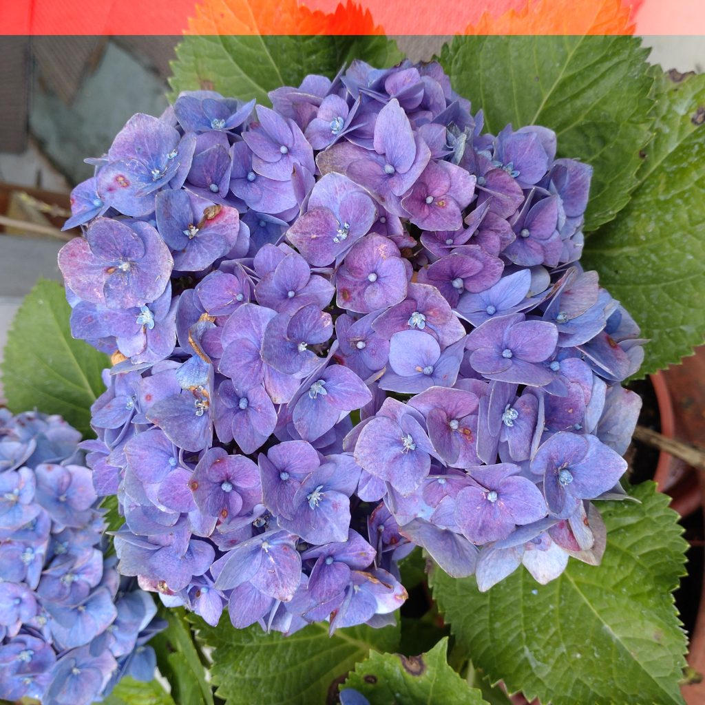
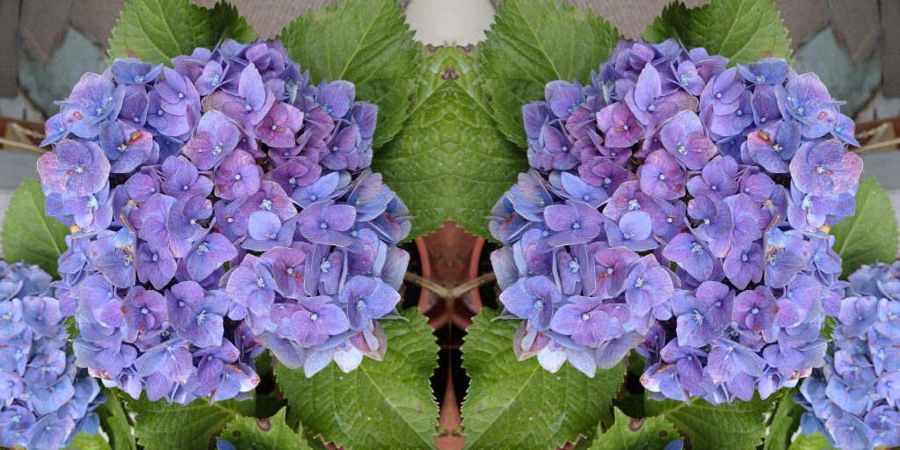
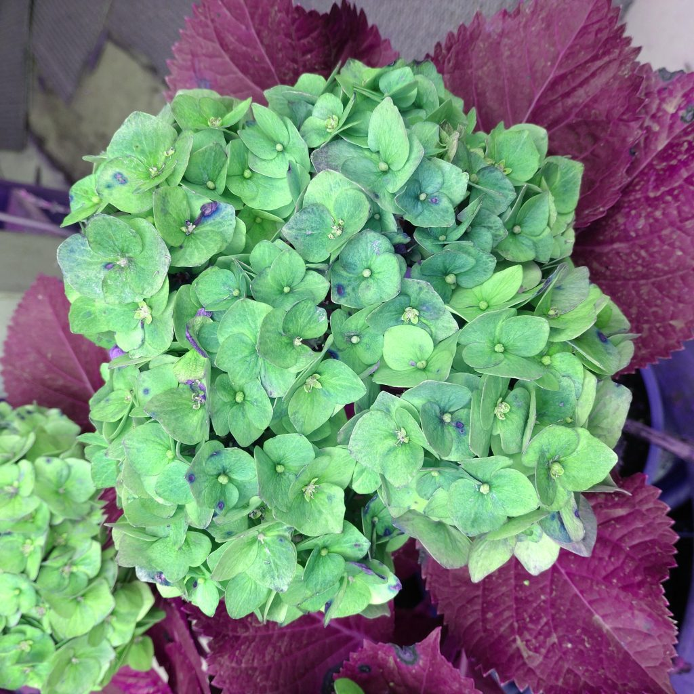
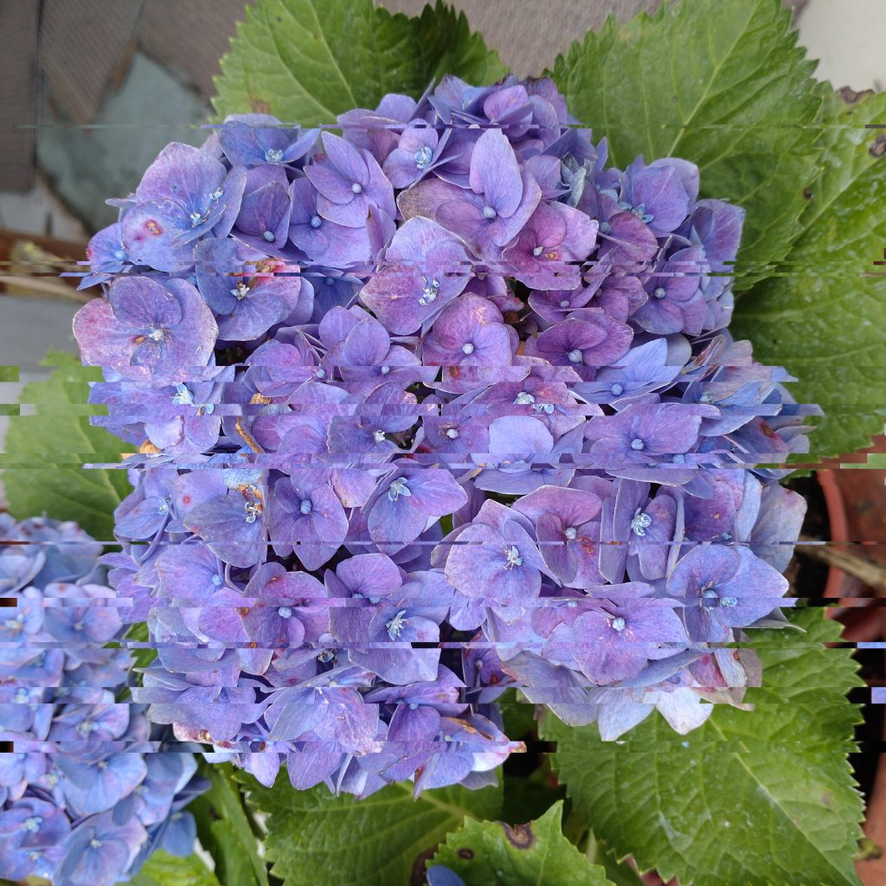
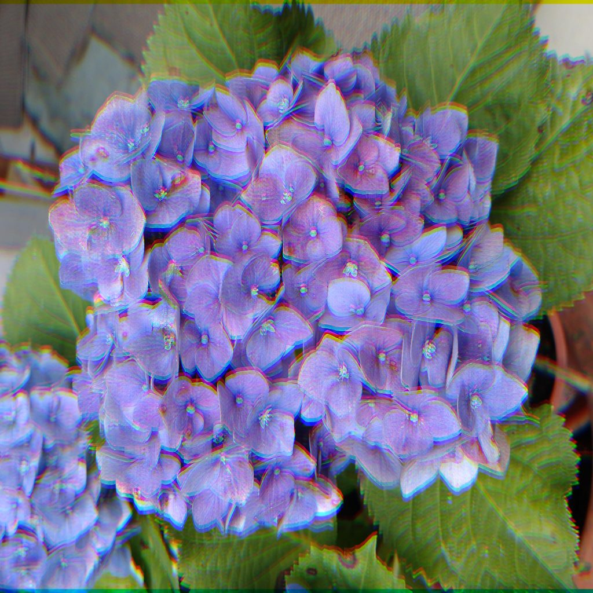
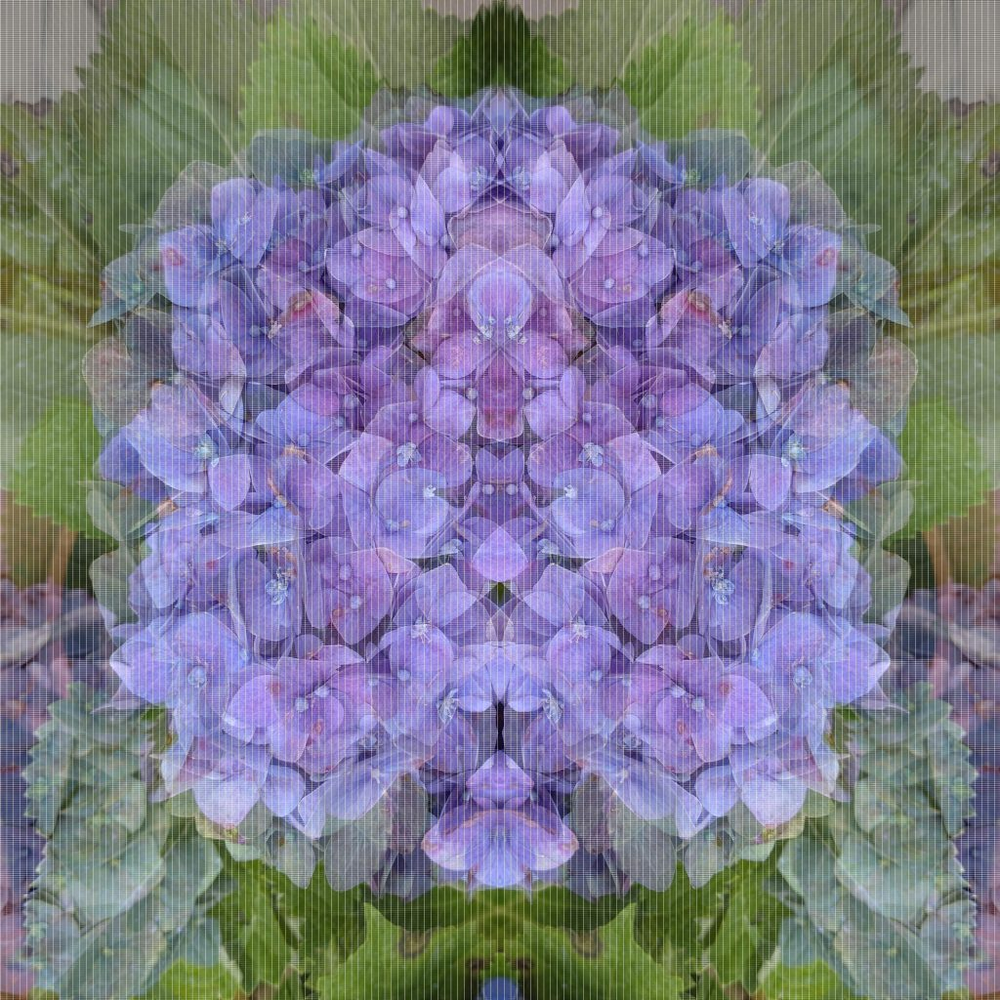

Image Manipulation via Array Slicing
Original Image
The original image used for this experiment is Hydrangea.

Initial Exploration (In-Class Techniques)
I first implemented the three core techniques learned in class to understand the basics of NumPy indexing and slicing.
- Red Stripe (Partial Assignment): By using
red[:150, :, 0] = 255, I learned how to target a specific spatial region (the top 150 pixels) and a specific colour channel (Red) to force a maximum intensity value.

- Mirroring (Axis Reversal): Using
img[:, ::-1, ]withnp.hstack, I explored how reversing the order of elements along the horizontal axis creates a symmetrical reflection.

- Channel Remix (Axis Permutation): Using
img[..., [1, 2, 0]], I learned how to reorder the entire color depth, effectively swapping Red, Green, and Blue roles to create a surreal color palette.

New Manipulated Versions
In this session, I moved beyond basic mirroring and colour swapping to explore how NumPy slicing can create complex visual textures like glitches and structural deconstructions.
Effect 1: Random Strata Glitch
This effect simulates a digital signal “snap” where sections of the image are shifted horizontally.

- Code Logic:Python
strata = img.copy() for _ in range(15): y_start = np.random.randint(0, h-50) y_end = y_start + np.random.randint(10, 60) shift = np.random.randint(-100, 100) strata[y_start:y_end] = np.roll(strata[y_start:y_end], shift, axis=1) - Manipulation: I used randomised slicing on the vertical axis (
y_start:y_end) and appliednp.rollto shift those specific pixel rows. - Why: It creates a sense of “digital decay,” breaking the organic continuity of the flower.
Effect 2: Chromatic Vibration

This manipulation creates a “ghosting” effect by misaligning the RGB color channels.
- Code Logic:Python
vibrate = np.zeros_like(img) vibrate[:-30, :, 0] = img[30:, :, 0] # Red channel shift up vibrate[:, :, 1] = img[:, :, 1] # Green stays vibrate[30:, :, 2] = img[:-30, :, 2] # Blue channel shift down - Manipulation: I sliced the height of individual color channels differently. By shifting the Red channel up and the Blue channel down, the image appears to vibrate.
- Why: It explores the concept of “Chromatic Aberration,” making a static 2D image feel energetic and multi-dimensional.
Effect 3: Pixel Weave & Scanline
This effect combines vertical slicing with array inversion to create a woven texture.

- Code Logic:Python
weave = img.copy() weave[::2, :] = weave[::2, ::-1] # Reverse every even row weave[:, ::15, :] = 0 # Add black vertical scanlines - Manipulation: I used step-slicing (
::2) to target every second row and reversed its horizontal order (::-1). Then, I used step-slicing on the width (::15) to “zero out” (blacken) specific columns. - Why: It gives the image a “lo-fi” CRT monitor aesthetic, transforming the photograph into a digital pattern.
What I Learned
Through these manipulations, I gained a deeper understanding of how images are structured as 3D tensors (Height, Width, Channel):
- Slicing as a Creative Tool: I realised that slicing isn’t just for cropping, it’s a “digital scalpel.” By selecting specific ranges like
[::2]or[y_start:y_end], I can isolate and transform specific structural parts of the data. - Colour Channel Independence: Learning that
img[:, :, 0]represents all the red data allowed me to manipulate “colour” as a physical layer, independent of the image’s shape. - Data as Pattern: By using
np.rollandnp.flip, I learned that “glitch art” is essentially just mathematical re-ordering of arrays. It changed my perspective on how digital errors can be intentional artistic choices.